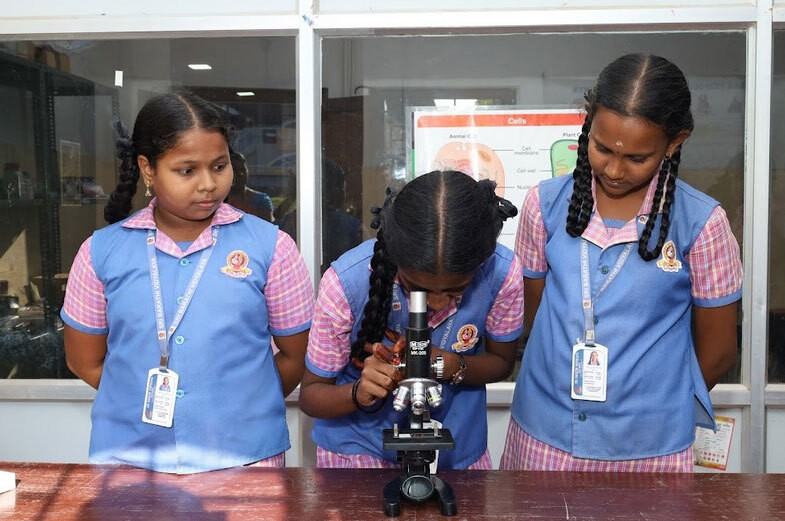

Home - Assessments
As we believe in assessing children on a regular basis using a variety of tools and techniques, we have Ongoing Assessments and Term End Assessments. It guides students in their learning.
End-of-unit and end-of-term assessment provides timely feedback on individual achievement levels and grade level results. These, in turn, guide teachers and parents to overcome challenges in a timely and effective manner or to obtain support when necessary.
Each child’s progress is shared through detailed reports, making learning visible to all.
As we look at the holistic development of the child, we also ensure that no child is left behind. Research on the learning process, learning styles and multiple intelligences are considered at every stage of designing.
In this way, we hope to fulfil our ultimate goal of teaching in a way that all students will learn.
